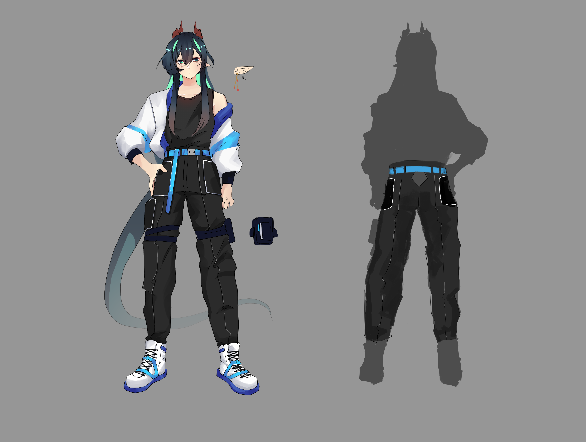
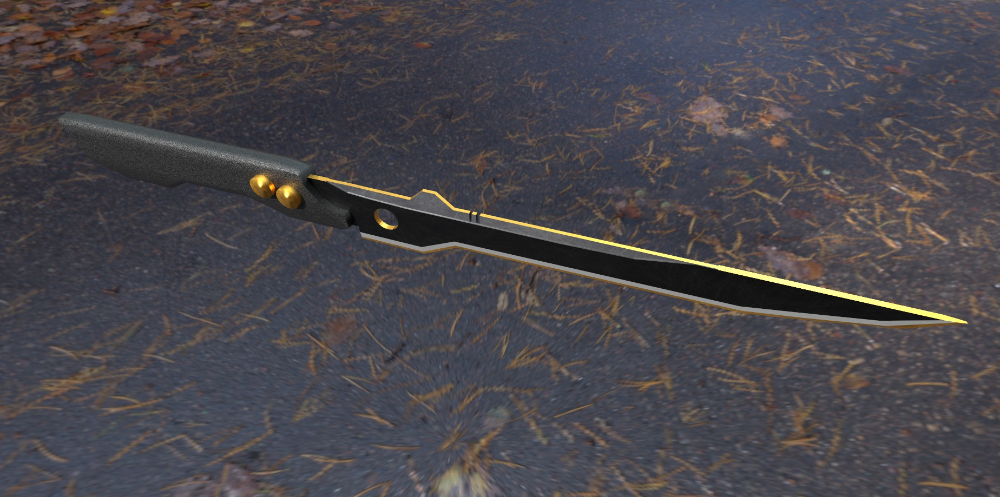
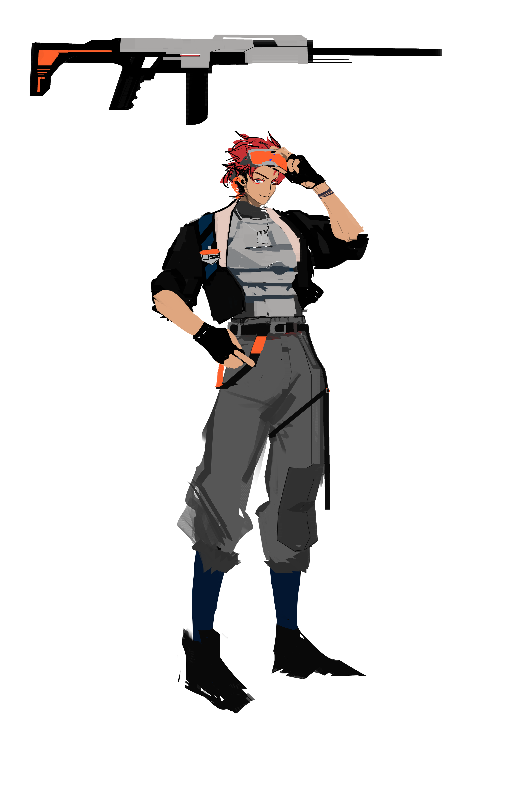
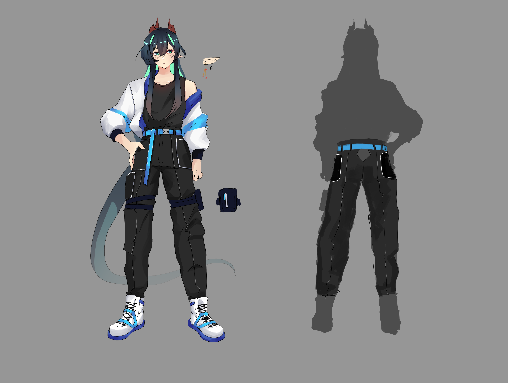
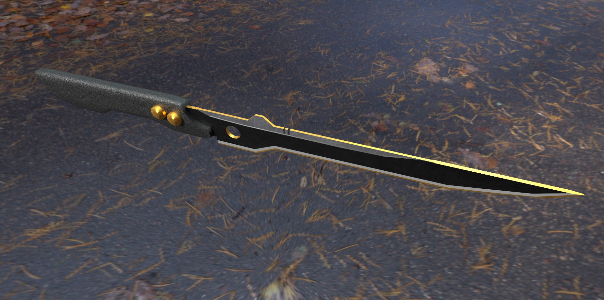
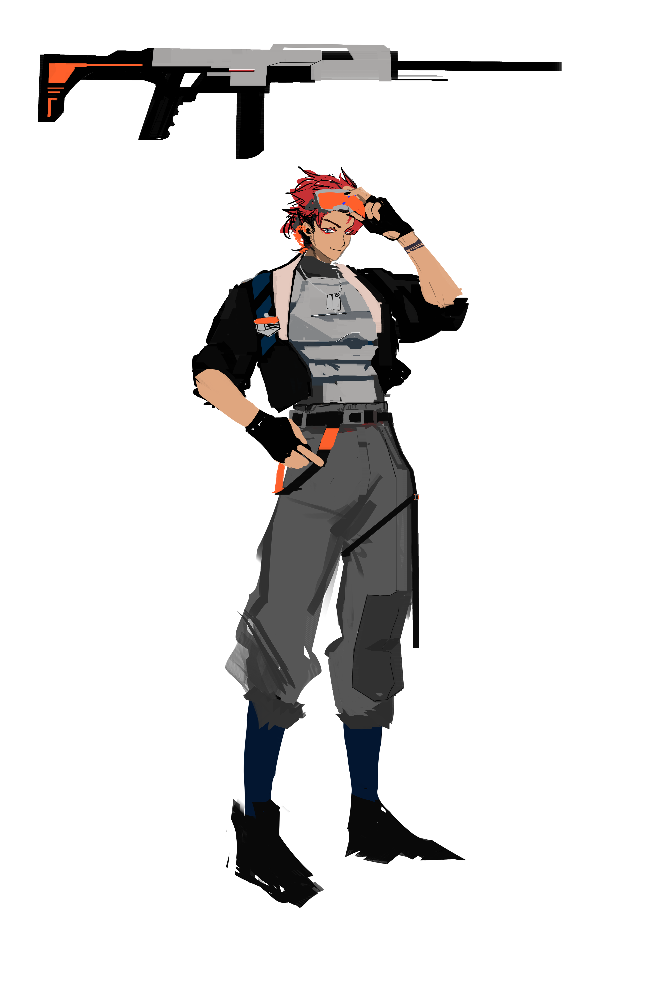

Alicia Chi is an Asian-American digital artist based in the Bay Area, California. She specializes in 2D illustration, concept design, and 3D environments within the sci-fi genre. Her expertise extends to creating live 2D illustrations and creating game concepts. Her passion lies in creating character designs and the exploration of the aesthetic relationship between humans and technology.
To learn more about my work history, check out my resume. Thanks for stopping by and having a look at my work!
 




